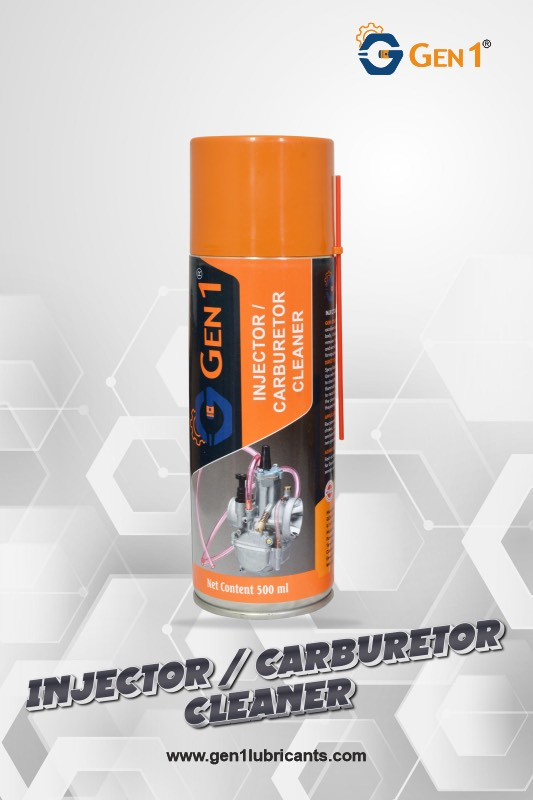
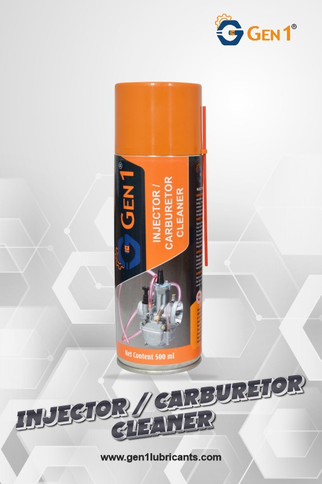

Injector / Carburettor Cleaner Spray
PACK SIZE: 150ml / 500ml
GEN1 Carburettor Cleaner Spray is a high-performance cleaning solution specifically engineered to restore and maintain the efficiency of carburettors, chokes, and fuel delivery systems. Its advanced solvent-based formulation rapidly dissolves and removes harmful deposits such as gums, sludge, carbon buildup, and varnish that accumulate over time and restrict fuel flow, leading to poor engine performance.
By thoroughly cleaning internal passages and precision components, it helps improve throttle response, fuel atomization, and overall engine efficiency. The formulation is non-corrosive and safe for use on equipment, sensors, and catalytic converters, ensuring effective cleaning without the risk of damage.
Regular use of GEN1 Carburettor Cleaner Spray supports smoother engine operation, reduced emissions, and prolonged service life of fuel system components.
How To Use
Switch off the engine and allow it to cool before application. Remove the air filter to access the carburettor and choke components, then spray GEN1 Carburettor Cleaner directly onto the internal passages, jets, throttle body, and choke mechanism to dissolve deposits, gums, and varnish. Allow the cleaner to act for a short period, then wipe away loosened residues or blow out with compressed air if required. Reinstall the air filter and start the engine to ensure smooth operation. For fuel lines, apply as recommended to remove internal contaminants and restore proper fuel flow.
Advantages
GEN1 Carburettor Cleaner Spray quickly removes gums, sludge, and carbon deposits, restoring fuel flow, throttle response, and engine efficiency. Safe for sensors and catalytic converters, it prevents blockages, reduces emissions, and extends the life of carburettor and fuel system components.